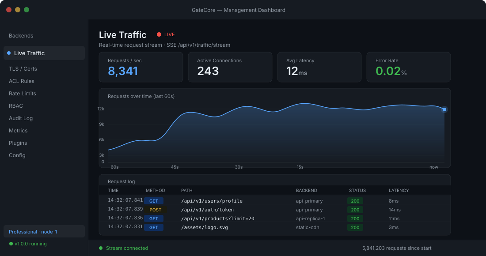
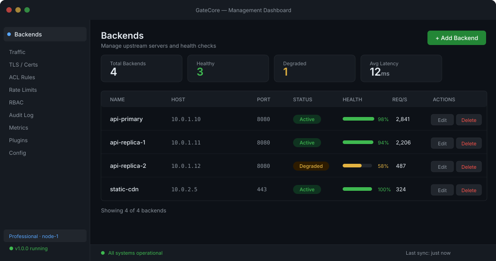

Six-figure appliance renewals
GateCore
Software license on commodity hardware. No hardware refresh cycle.
GateCore replaces your reverse proxy, Web Application Firewall (WAF), load balancer, and SIEM log forwarder — on commodity x86 hardware — with a single 30MB zero-dependency binary with built-in Web UI and tamper-evident audit trails.
Purpose-built for fintech SREs · Healthcare IT · MSPs · Regulated Infrastructure
Built in Go. Runs on anything. Trusted where downtime is not an option.
Most on-prem teams run 4–7 different appliances — each from a different vendor, each with its own dashboard, audit log, upgrade cycle, and support contract. One misconfiguration costs you an RCA.
GateCore is one binary. One API. One audit trail.
GateCore
Software license on commodity hardware. No hardware refresh cycle.
GateCore
Single unified audit log, HMAC-signed and RBAC-enforced, exportable in one call.
GateCore
Open SDK, full source delivery, and a Go binary you can read end to end.
GateCore v1.0 ships today as a Secure Application Gateway. The platform evolves with you — the same binary, the same API, the same team — as you grow.
Sub-millisecond proxying, Linux zero-copy splice() data transfer, connection pooling, and EWMA latency-aware balancing.
Block SQL injection, cross-site scripting (XSS), bad bots, and restrict traffic by country without external cloud subscriptions.
HMAC-SHA256 tamper-evident audit logs. Native CEF, LEEF, and RFC 5424 JSON streaming directly into Splunk, QRadar, and ELK.
Deterministic quorum-based leader election and leader-push config replication. High availability without complex etcd or ZooKeeper clusters.
Automated ACME Let's Encrypt certificates, route-prefix client certificate verification, and token revocation.
30MB static binary. One shell command to install on Ubuntu, Debian, or RHEL. Zero external runtime dependencies.
# 1-Line Production Installer (Ubuntu 24.04 · Debian 13 · RHEL 9) $ sudo ./install-prod.sh ✔ Host OS detected Ubuntu 24.04 LTS (x86_64) ✔ Runtime state created /var/lib/gatecore (mode 0700) ✔ Systemd unit installed /etc/systemd/system/gatecore.service ✔ WAF engine initialized OWASP Top 10 rules active ✔ SIEM pipeline ready CEF / LEEF / JSON streaming ✔ Cluster coordination 3-node quorum ready ✔ Management UI online https://127.0.0.1:9090 ✔ Traffic listener 0.0.0.0:443 (EWMA load balancer) → GateCore service active and running.

/metrics.

Every layer shares one API surface, one audit store, and one upgrade path. No vendor per tier. No integration glue.
Zero dependencies. No external databases. Inspect how simple it is to deploy, configure, and automate GateCore.
# Download and run the production installer:
sudo bash -c "$(curl -fsSL https://gatecore-gules.vercel.app/install-prod.sh)"
# Check the systemd service:
sudo systemctl status gatecore
# Retrieve initial admin credentials:
sudo cat /var/lib/gatecore/initial-admin-password
# Open the dashboard at https://YOUR_SERVER_IP:8443{
"listen": ":443",
"tls": { "cert_file": "/etc/gatecore/certs/server.crt", "key_file": "/etc/gatecore/certs/server.key", "min_version": "TLS1.3" },
"traffic": {
"algorithm": "peak-ewma",
"routes": [{
"path": "/api/v1",
"backends": ["10.0.1.10:8080", "10.0.1.11:8080", "10.0.1.12:8080"],
"health_check": { "path": "/healthz", "interval_ms": 2000 }
}]
},
"security": {
"waf": { "enabled": true, "block_sqli": true, "block_xss": true },
"rate_limit": { "requests_per_sec": 500, "burst": 50 },
"geoip": { "block_countries": ["T1", "XX"] }
}
}# Register an upstream backend:
curl -X POST https://localhost:8443/api/v1/backends \
-H "Authorization: Bearer $GATECORE_TOKEN" \
-H "Content-Type: application/json" \
-d '{"pool":"production-api","address":"10.0.1.15:8080","weight":10,"max_connections":1000}'
# Trigger a configuration reload:
curl -X POST https://localhost:8443/api/v1/config/reload \
-H "Authorization: Bearer $GATECORE_TOKEN"# Check binary version:
gatecore -version
# Print the hardware node fingerprint:
gatecore -fingerprint
# Validate configuration:
gatecore -test-config /etc/gatecore/config.json
# Stream audit logs:
journalctl -u gatecore -f -o json-pretty# Install a signed license on the air-gapped host:
sudo cp license.json /etc/gatecore/license.json
sudo chown gatecore:gatecore /etc/gatecore/license.json
sudo chmod 0600 /etc/gatecore/license.json
# Verify local entitlements:
gatecore -check-licenseResolve 6 known gaps. Reach 80/100 readiness score.
First paying clients. Commercial surface. Payment.
Open SDK, ecosystem, v1.5 network layer live.
GateCore 2.0. Replace every appliance in the rack.
We're not racing to match FortiGate feature-for-feature. We're building the category those vendors never owned: software-defined unified on-prem infrastructure. One platform. Commodity hardware. Full control.
For evaluation
For homelab & learning
For growing SaaS & API backends
For banks, healthcare & HA environments
For MSPs & large orgs
All plans include: one binary, one API, full documentation. No per-seat dashboards. No module unlocks. One upgrade path.
Audit trail gaps, latency spikes, compliance pressure.
Proof Full RBAC + HMAC audit log, sub-ms Go proxy.
Vendor lock-in, opaque firmware, data sovereignty.
Proof On-prem, source delivery, no cloud dependency.
Managing 12 different consoles for 20 clients.
Proof Site license + a single API surface across all clients.
Questions about migration, HA topology or procurement? Talk to the team that built it.
Full feature access, no card. We'll send the zip and your Ed25519 trial license.
Need it instantly? Connect with us directly:
Instant Request via WhatsAppPrefer email? mosameh2011@outlook.com
Your email client should be open with the details filled in. If it didn't open, email mosameh2011@outlook.com directly, or message us on WhatsApp.